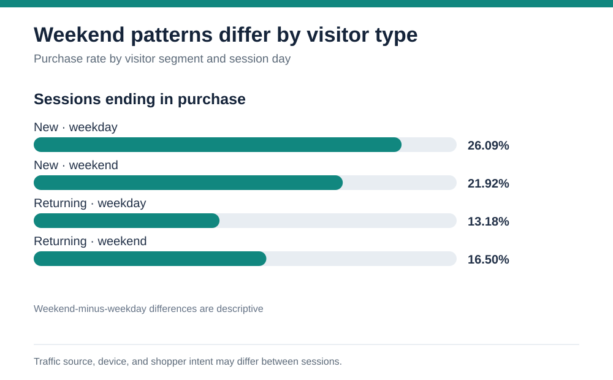
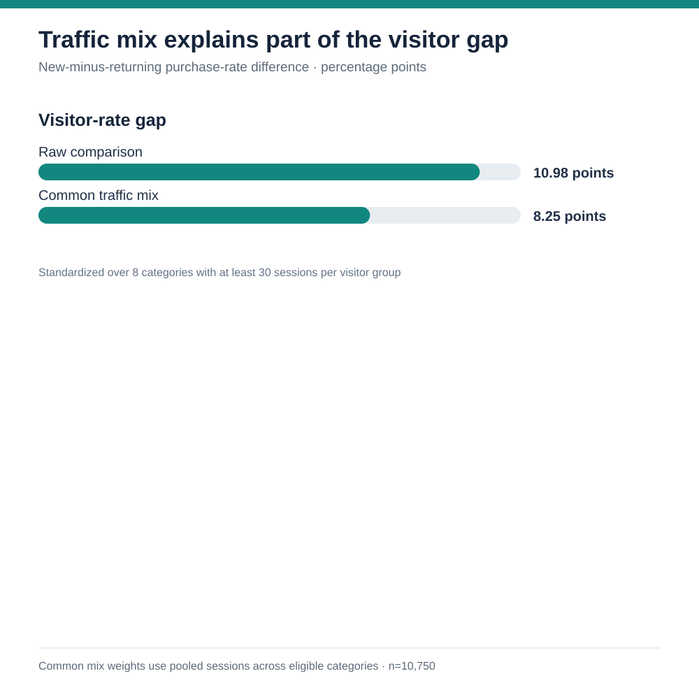

Business question
Which observable session characteristics are associated with a higher chance of purchase, and where should a commerce team investigate first?
Recommendation: Investigate friction for returning visitors and for people who browse few product pages. Prioritize a controlled test of navigation, product discovery, or checkout messaging before making a sitewide change.
Finding 1: visitor type
Purchase rate by visitor type. Rates describe this dataset; they do not show that visitor type causes a purchase.
1,694 sessions
10,551 sessions
85 sessions
New visitors had a purchase rate about 11 percentage points higher than returning visitors. This is a useful diagnostic lead, though campaign mix and user intent could explain part of the gap. Using a common month mix across nine months with enough new-visitor sessions, the gap remains 10.85 percentage points.
Finding 2: weekend patterns differ by visitor type
Purchase rate by visitor segment and session day. The difference is descriptive and may reflect traffic source, device, or shopper intent.

New visitors purchased in 26.09% of weekday sessions and 21.92% on weekends (weekend-minus-weekday difference: −4.17 points; approximate 95% interval −8.62 to +0.28). Returning visitors purchased in 13.18% of weekday sessions and 16.50% on weekends (+3.31 points; approximate interval +1.65 to +4.98). This motivates a segment-specific test, not a blanket timing rule.
Finding 3: traffic mix explains part of the gap
Compare the raw visitor gap with rates standardized to a shared mix of traffic categories.

The new-versus-returning purchase-rate gap narrows from 10.98 to 8.25 percentage points when both groups are compared across the same eight traffic categories (10,750 pooled sessions). One category has a reversed pattern, and the category codes are anonymized; this is a descriptive mix check, not a causal adjustment.
Finding 4: product browsing depth
Sessions grouped by number of product-related pages viewed.
2,369 sessions
4,364 sessions
3,445 sessions
1,429 sessions
723 sessions
Purchase rate rises across these browsing-depth groups. A buyer may simply browse more because they intend to buy; increasing page views alone is not a proven intervention.
Method and checks
I treated each row as one session and used the source's Boolean Revenue field as the purchase indicator. Purchase rate = purchasing sessions ÷ all sessions in a group. The file contains 12,330 rows and no blank fields. It has 125 identical feature rows; I kept them because the source says each session belongs to a different user during the study period.
Limits: The data is historical, lacks transaction value and advertising cost, and contains no experiment assignment. It supports descriptive comparisons, not claims about causal lift or financial return. The 85-session “Other” visitor group is too small for a strong conclusion.
Source: UCI Online Shoppers Purchasing Intention Dataset, Sakar & Kastro (2018), CC BY 4.0. Reproducible calculations: Python analysis · SQL queries · source CSV.